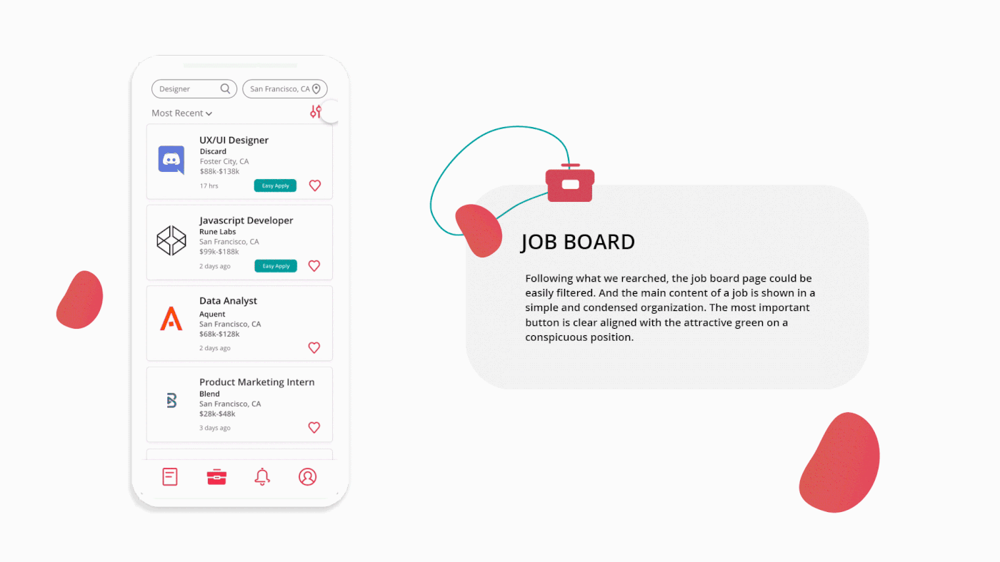
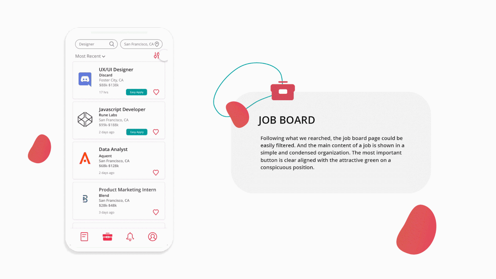

Jumpstart is a recruiting platform targeting university-level engineers with potential. Their main product is https://jumpstart.me/, and recently they launched their app on the android app store. They execute various job-searching services, including Forum, Job Board, Events, and Networking, through their website and app.
COVID-19 is affecting all areas globally. We notice that COVID-19 has an impact on getting hired in the summer of 2020 especially. Our team wants to build up the concept and the app to support and help whoever deals with the impact of COVID-19 on everything from canceled internships or offers to feel anxious & lonely.
Total nonfarm payroll employment fell by 701,000 the unemployment rate increased by 0.9 percentage points to 4.4 percent in March 2020.
At the same time, even big tech's summer internships have shrunk or canceled, including Glassdoor, StubHub, Funding Circle, Yelp, Checkr, and even the National Institutes of Health.
The number of jobs available to apply for on ZipRecruiter — has fallen 14% since mid-February.
UI/UX Designer
Figma, XD
Photoshop
Research, Wireframing, Interaction Design, Visual Design, Prototyping, and Testing
Brand Competitiveness
1. Simplify brand color scheme;
2. Unified style;
3. Improve the quality of design element;
Strengthen Core Functions
1. Strengthen the forum function;
2. Easy networking;
3. Updated industry news and current information;
Optimize User Experience
1. Simplify steps;
2. Improvement content quality;
Survey
Job Board, like LinkedIn, is the primary choice.
Referral and Networking are secondary for entry-level employees to get hired.
Most-wanted Functions: Recommend jobs, Newsfeed, Cater to university-level, How Qualified and How Competitive.
Interviews
The job board and networking are still the most efficient ways for most students to search for a job.
Based on the results, working experiences are the most significant thing for students to get hired.
It is truly difficult to get an internship or job this summer.
People love to read shared experiences.
Despite salary and company size, students attach more importance to the working environment, which means that company review is a core element.
After summing up the user interview and user survey, we compiled the user personas, which acts as an assembled image of our target audience and job-seekers in general.
It is important for the brand to be unique and trending. The high contrast color represent the creativity behind the app. All the new designed icons have clear function and recognization for users based on our user test.
There are end result screens where UI meets UX along with sufficient data to validate our design decisions. We want to build close connections around the users that want to be connected in the isolated situation.
 

This is my first teamwork project, through which I learned a lot of knowledge about UI and UX from my partners. I have listed some of my biggest takeaways from this project.
Define clear roles and responsibilities
In team collaboration, the most important thing is to clearly divide tasks and properly execute the responsibilities. Once these are done well, the team will be more efficient and productive.
Be open-minded
Everyone as an independent person has their ideas. In teamwork, it is critical to gather each others' thoughts and ideas. Sometimes, your teammates may have some good ideas that inspire you.